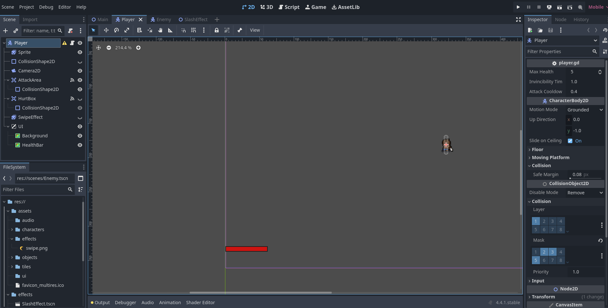

Meet the Developer
Who I Am
Hello! I'm a passionate indie game developer who grew up loving classic pixel RPGs. I'm creating Kindred as a love letter to the games that shaped my imagination — combining storytelling, exploration, and heartfelt themes of brotherhood.
Building Kindred
Kindred is built using the Godot Engine, a powerful open-source platform perfect for 2D pixel-style games. I'm coding primarily in GDScript and using tools like Aseprite for spritework and Tiled for map design. Everything — from the lore to the logo — is handcrafted with a long time process of personal ideas and stories that I wish to bring to life.
Stay Connected
If you'd like to follow the development journey or get in touch, feel free to reach out via GitHub, Itch.io, or Instagram!